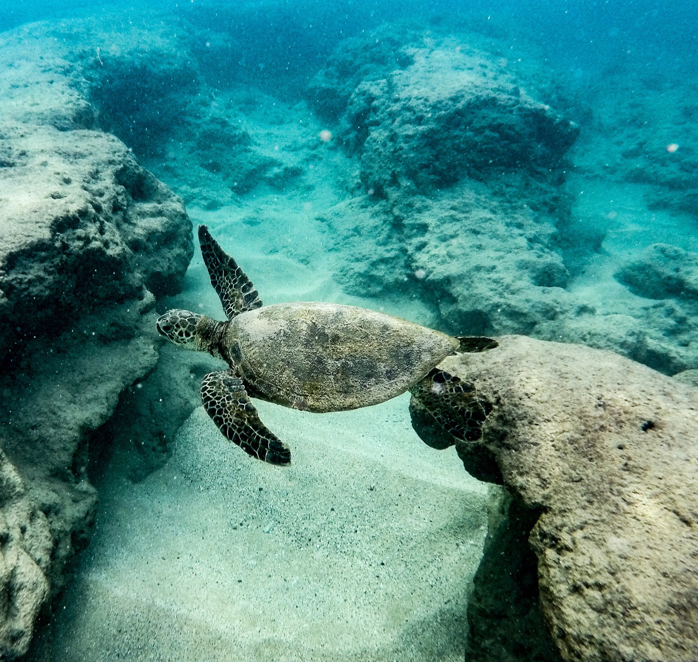
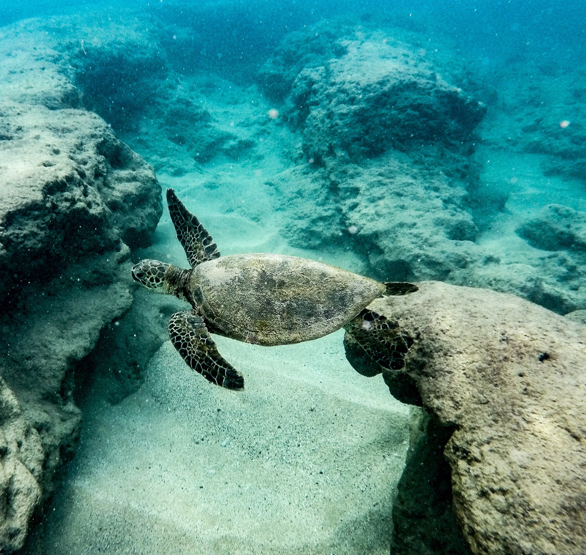
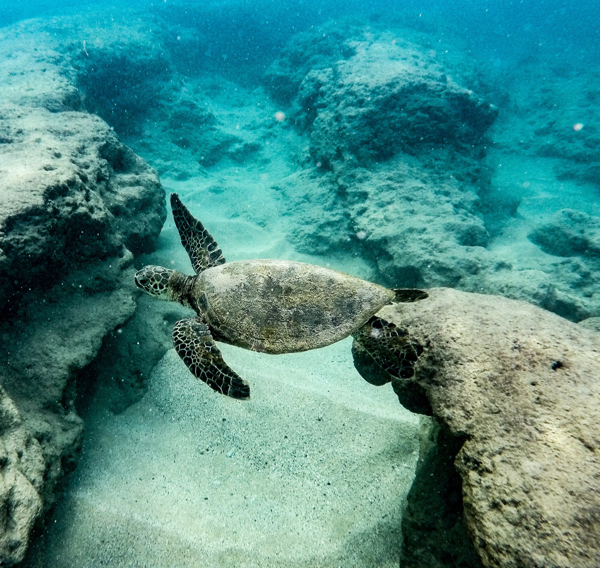

Every year, collosal sized sea turtles drag themselves onto beaches all over the world. These turtles are pregnant, and they are looking for a place to bury their eggs. After digging a hole, they lay hundreds of eggs, and then cover them in sand. That is the only interaction these baby turtles will have with their parents.
A couple of months later, the eggs begin to hatch, and these newborn turtles make a beeline for the ocean. Roughly half of the turtles make it to the water (depending on the time of day), due to various predators. These newborn turtles then begin a feeding frenzy for the next few days, eating everything they can, although many more are taken by predators.
These years are known as the lost years in a sea turtle's life. The turtles will leave the coastline, going off the raidar for around ten years, until they reach the size of a frisbee. In their juvenille years, they continue to forage along the coast, gorwing and maturing. About 1% of sea turtles make it to adulthood, or one in every one hundred. Once maturity is reached, the turtles begin their adult life, soon beginning the cycle again.
| Species | Size |
|---|---|
| Leatherback Sea Turtle | 500-1500 pounds |
| Loggerhead Sea Turtle | 350 pounds |
| Green Sea Turtle | 350 pounds |
| Hawksbill Sea Turtle | 150 pounds |